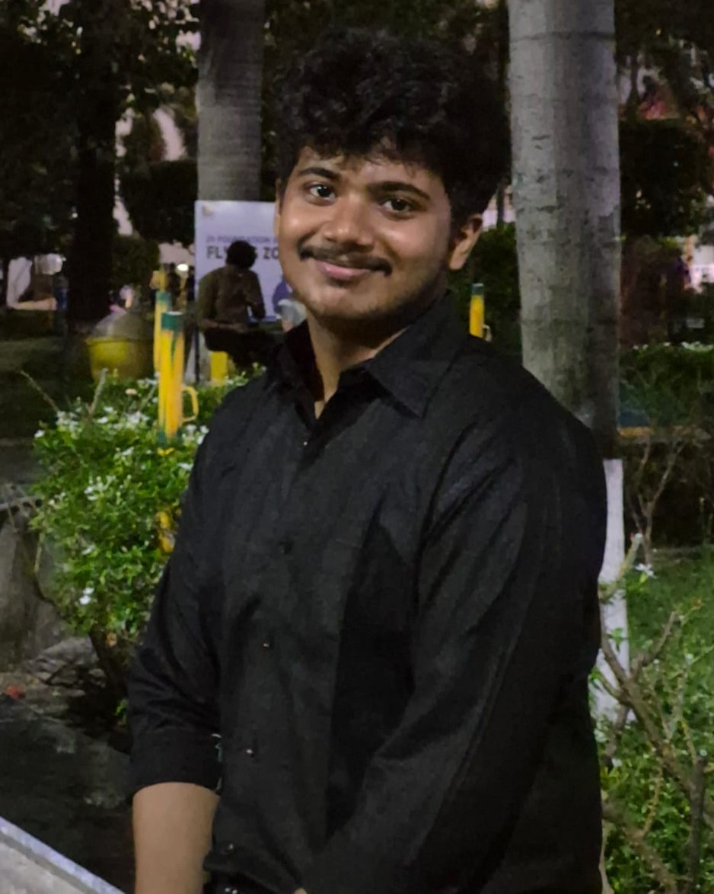

Cyber Security student turning curiosity into working security tools.
I am a passionate and curious Cyber security student with a strong interest in Cybersecurity, Artificial Intelligence, Web Security, and Software Engineering. I enjoy learning how technology works and, more importantly, turning what I learn into practical projects that can solve real-world problems.
My journey in technology has involved working on projects related to phishing detection, website security, secure applications, password generation, email threat detection, and AI-based security systems. Through these projects, I have gained practical experience with technologies such as Python, Flask, JavaScript, HTML, CSS, SQL, Git, and modern web development tools.
I am particularly interested in cybersecurity because it combines problem-solving, creativity, and continuous learning. I enjoy understanding how attacks happen and developing systems that can detect, analyze, and prevent potential threats. I also explore Artificial Intelligence and Machine Learning to understand how intelligent systems can improve cybersecurity and automation.
Beyond coding, I believe that every project I work on gives me an opportunity to develop not only my technical skills but also my ability to analyze problems, design solutions, and work systematically.
My goal is to build a career in the technology and cybersecurity field where I can contribute to meaningful projects, continue developing my skills, and create secure and useful digital solutions. I am always open to learning new technologies, taking on challenging problems, and turning ideas into working projects.

Academic path so far — verified dossier.
Guru Nanak Institute of Technology
Madhyamgram APC Vidyayatan (Boys)
Madhyamgram APC Vidyayatan (Boys)
Hands-on virtual experience, earned while pursuing my degree.
Completed a Cyber Security internship with Thiranex Skill Development & Future Tech, MSME-registered. Verified certificate ID: THX-AUG0426-563.
Completed 6 industry job simulations with Deloitte, Commonwealth Bank, Datacom, BCLP and National Urban League.
B.Sc Cyber Security student building live security tools and earning industry certificates alongside coursework.
Courses and simulations completed — what each one taught me.
Mock technical interviews — problem-solving fundamentals, algorithm and data-structure challenges, and communicating solutions clearly.
View PDF ⧉Core security concepts — threats, vulnerabilities, and how defense works, via the Cisco Networking Academy program.
View PDF ⧉PC building blocks — installing components, device maintenance, laptops and mobile devices, plus general and fire safety standards.
View PDF ⧉Real-world cyber tasks in a simulated Deloitte engagement — hands-on security work from Jun to Jul 2026.
View PDF ⧉Career toolkit — owning your story with an elevator pitch, charting your path, intentional networking, resume branding, and virtual interviews.
View PDF ⧉Application to assessment — creating a resume, drafting a cover letter, video interviews, and assessment-centre practice.
View PDF ⧉Bank-grade security drills — data analysis, incident response, security awareness, and penetration testing.
View PDF ⧉AI at work — writing effective prompts, partnering with AI to research, design and create, plus AI-powered debugging.
View PDF ⧉The full story — everything in one box.
My cybersecurity journey started with curiosity — how digital systems are protected, how attacks happen, and how technology can detect and prevent threats. As a Cyber Security student at Guru Nanak Institute of Technology, I built foundations in Python, JavaScript, HTML, CSS, SQL, Flask, Linux, and Git — then earned Cisco's Introduction to Cybersecurity (threats, vulnerabilities, defense) and Computer Hardware Basics (what's actually inside the machines). Password security and phishing/URL detection became my first builds, growing into web security, Website Security Copilot, and always-on Laptop Antivirus protection. Deloitte and Commonwealth Bank simulations drilled incident response, pen testing, and security awareness; Datacom's AI program showed me AI-powered defense and debugging — and a Cyber Security internship at Thiranex (Aug–Sept 2026, verified) added guided, hands-on experience. Interview and career-readiness programs sharpened how I present it all. I learn by building rather than only studying — and I am still building.